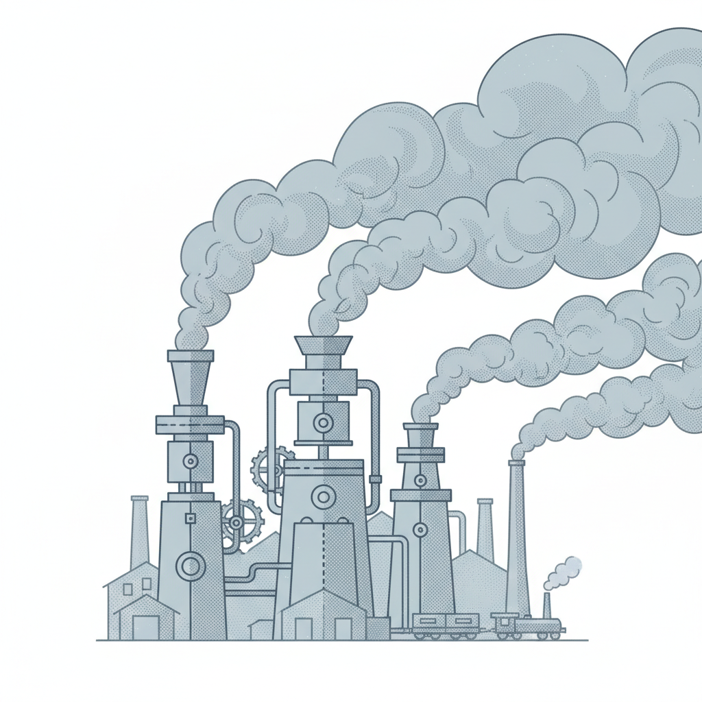

坠落
2026年4月27日下午，DeepSeek在官网更新了API价目表。V4-Pro模型的缓存输入价格：0.025元每百万Token。
一百万个Token大约是75万个汉字——差不多三部《三体》的篇幅。处理这些内容的费用，不到一瓶矿泉水的二十分之一。
三年半以前，OpenAI的GPT-3.5每百万Token收费20美元，折合人民币约140元。那是2022年11月，ChatGPT刚上线的月份。到2024年10月，同等能力模型的价格已降到0.07美元。两年，280倍。
DeepSeek把曲线又往下拉了一截。V4-Pro的标准输入价格3元每百万Token，比OpenAI GPT-5.5 Pro便宜98%。促销期打2.5折，缓存价格再压到底——0.025元。
这个定价背后有一个容易被忽略的事实：V4-Pro跑在华为昇腾芯片上，不是NVIDIA的GPU。当美国出口管制把最先进的AI芯片挡在中国之外，DeepSeek在受限的硬件上找到了另一条成本路径。
但价格表上的数字不是全部。
同一周，亚马逊、微软和Google先后公布季度财报。AWS的AI相关业务季度营业利润超过100亿美元。Google Cloud毛利率保持在20%以上。微软云业务收入同比增长超过30%。
全球企业AI支出预计2026年达到2.5万亿美元。人均AI花费从2025年的1358美元涨到2068美元，涨幅超过50%。86%的企业表示今年AI预算将增加。
一个正在剧烈降价的产品，让卖方和买方同时花了更多的钱。
一本1865年的书
1865年，一个29岁的英国经济学家出版了一本书，叫《煤炭问题》。
威廉·斯坦利·杰文斯注意到了一件让同时代人困惑的事：詹姆斯·瓦特改良蒸汽机之后，每完成同样的工作，需要的煤炭大幅减少。按直觉推断，英国的煤炭消耗应该下降。
但实际发生的完全相反——煤炭消耗量暴增。
原因很简单。瓦特的蒸汽机效率太高，高到用煤变得非常便宜。便宜到原本用不起蒸汽机的小工厂开始装了。便宜到蒸汽机开始出现在矿井、纺织厂、铁路机车和远洋轮船上。每台机器的耗煤量确实降了，但机器的总数增长了几十倍。
杰文斯在书中写了一句后来被反复引用的判断：认为节约使用燃料等同于减少消耗，是一种思维混乱；事实恰恰相反。
这个发现后来被称为"杰文斯悖论"——技术进步让单位资源使用更高效，但恰恰因为更高效，使用场景急剧扩大，总消耗不降反升。
这不是一条只在19世纪成立的规律。
1990年代，美国长途电话费从每分钟1美元以上降到接近零。电话公司一度担心收入崩塌。结果长途通话量暴增了几十倍。然后短信出现了，视频通话出现了，直播出现了。每一次通信成本的下降，都催生出一种消耗更多带宽的新使用方式。到2020年代，全球通信行业的年收入是1990年的4倍以上。
数据存储的轨迹几乎一样。2000年，1GB硬盘存储成本大约10美元。2026年，不到0.01美元——降了1000倍。但全球云存储市场从2015年的不到100亿美元涨到2025年的超过1000亿美元。存储便宜了，于是人们存了一切——照片、视频、日志、聊天记录、备份、备份的备份。
2026年的AI Token，正在走煤炭、长途电话和硬盘走过的路。

Agent的胃口
杰文斯悖论要发生，需要两个前提：单位成本下降，同时出现大量新的使用场景。
在AI领域，"大量新使用场景"有一个具体的名字：Agent。
一个用户向ChatGPT提一个问题，大模型生成一段回答，整个过程消耗几千个Token。但一个AI Agent完成同样的任务，路径完全不同。它需要理解任务、拆解步骤、调用外部工具、核对中间结果、在出错时回退重试、最后验证输出。一句"帮我订一张下周二去上海的机票"，可能触发十几轮内部推理、多次工具调用和若干次自我纠正。Token消耗从几千跳到几十万——两个数量级的差距。
2026年5月7日，Anthropic在开发者大会上发布了一个功能，叫Dreaming。
名字起得准确。Dreaming让Claude的Agent在空闲时段"做梦"——自动回顾过去的工作会话，提取重复出现的模式，记住哪些工具在什么情况下容易出错，把这些经验写入长期记忆。下一次被唤醒时，Agent的表现会更好。
法律AI公司Harvey是第一批试用者。他们的Agent在处理法律文件时，经常卡在特定格式的文档上。Dreaming上线后，Agent在休息时段自动学会了那些格式的处理技巧。结果：任务完成率提升到原来的6倍。
医疗文档公司Wisedocs的数据也指向同一方向。把Dreaming和Anthropic的其他工具组合使用后，文档审阅时间缩短了50%。
这些数字看起来是效率的胜利。但换一个角度看，它们讲的是另一件事。
Dreaming本身就是一个持续消耗推理资源的进程——每一次"做梦"，大模型都在读取历史会话、识别模式、生成经验总结。Agent白天工作消耗Token，夜里"做梦"还在消耗Token。
任务完成率提升6倍意味着什么？意味着用户有了足够的信心把6倍于之前的任务量交给Agent。每一个新任务又产生新的会话记录，供下一次"做梦"消化。
这是一个自我强化的循环。
Agent越能干，人们越信任它，交给它的任务越多，它消耗的Token越多。而Token价格越低，部署Agent的门槛越低，进入循环的企业越多。
DeepSeek的0.025元让更多企业有能力部署复杂的Agent系统。Anthropic的Dreaming让这些Agent在部署之后持续消耗推理资源。价格下降和能力扩展不是两件独立的事——它们是杰文斯悖论的两个齿轮，咬合着转动。
谁的降价
全球四大科技巨头——Alphabet、亚马逊、Meta、微软——在AI基础设施上的年资本支出从2022年的1623亿美元涨到了2025年的4483亿美元。三年，将近三倍。
这些钱花在了数据中心、GPU集群和冷却系统上。NVIDIA在数据中心加速器市场的份额维持在85%到90%之间。每一次Token降价，每一个新上线的Agent，最终都转化成对更多算力的需求。而这些算力的钱，流向了基础设施的提供者。
Token在降价。算力在涨价。这两件事同时发生，并不矛盾。
模型厂商的日子更复杂。DeepSeek的0.025元是一个攻击性定价——它在华为昇腾芯片上跑出了比NVIDIA方案更低的成本，然后把成本优势变成价格战的武器。OpenAI的处境不同：2026年预计亏损140亿美元，每赚1美元的推理收入要花掉1.35美元的成本。Anthropic稍好，预计2027年实现正向自由现金流——但那要到明年。
无论模型厂商盈利还是亏损，云厂商和芯片厂商的收入已经落袋。AWS每季度超过100亿美元的营业利润不取决于哪个模型赢了——取决于所有模型加在一起消耗了多少算力。Gartner预测，到2030年大模型推理成本将比2025年再降90%以上。但这只会让更多场景变得可行，让更多Token被消耗，让基础设施厂商的收入天花板再度抬高。
终端企业用户面对着一个不太舒服的现实。2026年，42%的企业把"优化AI支出"列为首要任务，这个比例第一次超过了"扩大AI应用"。企业开始发现：AI确实变便宜了，但账单变贵了。原因不复杂。Token便宜了，所以企业用了更多的Agent；Agent能干了，所以企业把更多的工作交给它；更多的工作意味着更多的Token。
这里确实存在一种例外。如果一家企业的AI用途是固定的——每天处理固定数量的客服工单，不部署Agent，不增加新功能——那么Token降价直接等于账单下降。
但这种情况正在消失。不部署Agent的企业，正在被部署了Agent的竞争对手甩开。Anthropic的年营收从2025年初的10亿美元涨到2026年4月的300亿美元，增长的主要驱动力不是消费者聊天，是企业级Agent工作流。超过1000家企业每年在Claude上的花费超过100万美元，这个数字在两个月内从500翻到1000。
杰文斯悖论的真正含义不是"技术进步没有用"。它说的是：技术进步的收益很少以省钱的形式兑现。瓦特的蒸汽机没有让工厂主的煤炭账单下降——它让工厂主拥有了十倍于以前的产能。Token降价不会让你的AI账单变少——它让你拥有了之前不敢想的Agent能力。
你确实变强了。你只是也变贵了。
161年
1865年，杰文斯出版《煤炭问题》时，被进步派嘲笑。他们认为技术的力量没有边界，效率的提升终将让资源变得充裕而廉价。杰文斯两年后当选英国科学促进会会长，但他关于煤炭消耗的预言，很长时间被更乐观的声音淹没了。
2026年5月，DeepSeek的价目表上印着0.025元。距离杰文斯写下那句话——"认为节约使用等同于减少消耗，是思维混乱"——过去了161年。
那句话没有过时。